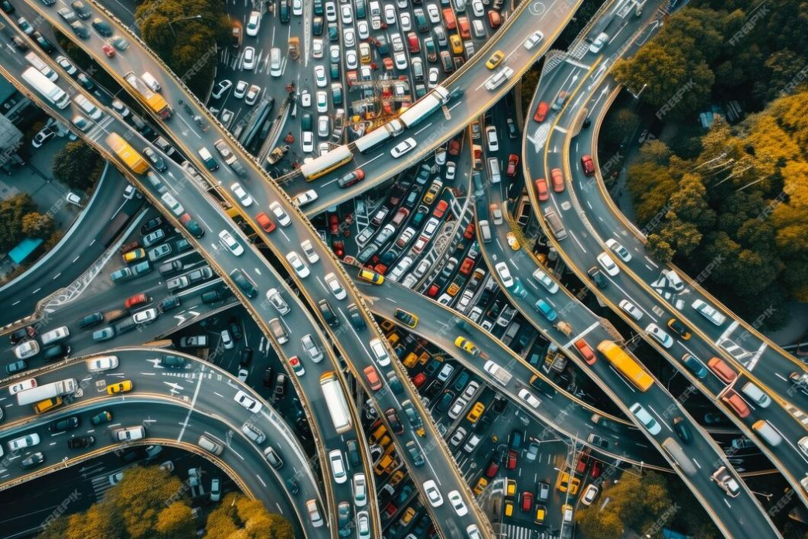

Curs de legislație

Cap. I
Dispoziții generale
Cap. II
Vehiculele
Cap. III
Conducătorii de vehicule
Cap. IV
Semnalizarea rutieră
Cap. V
Reguli de circulație
Cap. VI
Infracțiuni și pedepse
Cap. VII
Răspunderea contravențională
Cap. VIII
Dispoziții finale
Cap. IX
Categorii de vehicule pentru care se eliberează permisul de conducere